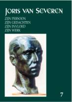

> nieuwsbrief > 2003 - nr 3
Inhoud
Bijdrage jaar
2003
Slechts een gering
aantal voormalige leden bleef "achterstallig". Anderzijds blijken de
nieuwe leden amper in staat het hiaat op te vullen dat jaar na jaar ontstaat
tengevolge van de overlijdens binnen de generaties die het allemaal meebeleefd
hebben. Voor het eerst sedert het ontstaan van onze werking worden we aldus
geconfronteerd met een stagnerend ledenbestand. Daarom doen we andermaal een
beroep op uw medewerking, teneinde door middel van bijliggende folder binnen uw
kennissenkring te ijveren voor nieuwe leden. Maak er nuttig gebruik van! Ter
herinnering: voor de jaarbijdrage van 21 EUR ontvangt men naast het nieuwe
jaarboek uiteraard ook de vier nummers van de Nieuwsbrief. Méér
exemplaren van de folder worden u op eenvoudig verzoek ter beschikking gesteld.
Zoekertje
Sinds jaar en dag is een van onze leden totnogtoe tevergeefs op zoek naar een borstbeeld van Joris van Severen. Ook een origineel Verdinaso-vaandel staat om zijn verlanglijstje. Ons secretariaat Paddevijverstraat 2, 8900 Ieper - wil in deze graag fungeren als doorgeefluik. Mocht iemand een of ander te koop willen aanbieden, dan graag aanbod met omschrijving en richtprijs meedelen.
Ook dit jaar
Ook dit jaar lazen we in Renaissance
Européenne (nr.55) het
blad van de Waalse en de Frans-Vlaamse vleugels van Terre et Peuple
opnieuw een oproep tot deelname aan de bedevaart naar Abbeville. We citeren:
Personalité de haute qualité morale et intellectuelle, Joris van Severen,
éveilleur de peuples, a ressuscité la conscience de lunité cohérente des
Dix-Sept Provinces des Pays-Bas. Il ne faisait alors quêtre en avance sur
son temps. Abusivement suspecté, alors quil a été un héros de la guerre
1914-18, il nen sera pas moins déporté en France le 10 mai 1940 et, dans la
panique du bombardement dAbbeville, assassiné, avec son secrétaire Jan
Rijckoort, dans des conditions scandaleuses. Un beau monument a été érigé à
leur mémoire dans le cimetière dAbbeville. Depuis soixante ans, chaque année,
les pélerins y forment un cortège qui se déroule dans un silence absolu pour
une célébration dune sobre beauté. (...)
Op 24 mei namen ze met een flinke afvaardiging deel aan de plechtigheid als georganiseerd door de vzw. Abbeville. Bij wijze van afsluit van de herdenking legden ze ook een eigen bloemenkrans neer.

Jaarboek Joris van Severen deel 7 (2003)
Een blik op de
inhoudstafel van dit zevende jaarboek laat een wel zeer verscheiden
inhoud vermoeden. En dit is inderdaad ook het geval. We ontmoeten er Joris van
Severen zowel in de intieme als in de openbare sferen van zijn leven. We
overlopen even:
Aan Van Severens
relatie met Rachel Baes, ging een andere vooraf. Ze was ontstaan in de jaren van
de Eerste Wereldoorlog en eindigde tragisch met de plotselinge dood van de
geliefde in het najaar van 1924. Dit verhaal over Maine staat te lezen in
zijn Oorlogsdagboeken en heeft hem diep getekend. Kurt Ravyts
reconstructie ervan die Joris van Severen en Germaine Duccobu: het verhaal
van een onmogelijke liefde tot titel kreeg, biedt meteen een gedegen
toelichting tot de lectuur van de nog te publiceren - Oorlogsdagboeken
.
Aan het verschijnen
van Patrick Spriets boek over de reeds genoemde Rachel Baes kan niet
stilzwijgend voorbijgegaan worden: het vraagt om enkele kanttekeningen
onzerzijds. Kurt Ravyts nam deze voor zijn rekening onder de titel: Ik
ben alleen met mijn liefde zoals jij. Joris van Severen en Rachel Baes.
De jongste decennia
is de mythe van de 80% in de verdrukking gekomen. Dat percentage
Vlamingen in het IJzerleger zou tot de flamingantische overdrijvingen behoren. Daniël
Vanacker ging na wat Joris van Severen zelf daarover noteerde in zijn Oorlogsdagboeken
en confronteert het met tientallen andere bewaard gebleven tijdseigen
getuigenissen.
Eveneens uit de
jaren voorafgaand aan het Verdinaso, stamt de briefwisseling tussen Joris van
Severen en de Nederlandse historicus Frederik Carel Gerretson. Sam van
Clemen speurde ze na en situeert ze in haar tijd. Van dezelfde Gerretson zou
Van Severen in 1938 vernemen dat ze er nog steeds parallelle denkbeelden op na
hielden.
Ondertussen ging op
21 september 2002 het 3e Colloquium Joris van Severen door. Het was
gewijd zijn aan wat gemeenzaam het "sociaal project" van het Verdinaso
kan genoemd worden. Ingeleid door Vik Eggermont werd daaraan in
een drietal referaten aandacht besteed:
Romain
Vanlandschoot beet de spits
af met Van syndicalisme naar corporatisme. De rol van Juul Declercq in de
jaren 1925-1932. Terecht kunnen we hier spreken van een microgeschiedenis
die model kan staan voor een macrogeschiedenis. In dit jaarboek lezen we alleen
maar - pro memorie als het ware de synthese van dit zeer
uitgebreide referaat. De integrale tekst zal opgenomen worden in het volgende
jaarboek.
In De bronnen
van het solidarisme en het corporatisme van Joris van Severen speurt Frank
Judo na bij welke denkers Van Severen te rade ging bij het formuleren van
zijn personalistisch en solidaristisch alternatief voor de toen bestaande
wanorde in de mens en de samenleving. Of hij daarbij een eenzame ontginner, dan
wel een exponent naast andere, was van een nieuwe tijdsgeest, zal verdere studie
moeten uitwijzen.
Edwin Truyens
stond in voor het zeer gewaardeerde afsluitend referaat over Het nationale
socialisme van Hendrik de Man. Overeenkomsten en verschillen met het
nationaal-solidarisme van Joris van Severen. Uit Van Severens agendas
weten we dat beide voormannen wel eens vaker van gedachten wisselden. Het
referaat speurt evenwel dieper en gaat omtrent een aantal items na waar
overeenstemming bestond en waar de breuklijnen gehandhaafd bleven.
Aan de
colloquiumreferaten vooraf gaat een tekst van de hand van Maurits Cailliau -
over het solidarisme als sociale leer en zijn katholieke achtergronden - die,
ten behoeve van de jongere generaties, toelichting biedt bij de sociologische
terminologie uit de jaren van het interbellum.
Eerder toevallig maakten we kennis met het gedicht Aan de Somme van
Wiebren Tabak. De auteur is ons verder onbekend, maar het gedicht roept
als het ware een stille verwijzing naar Joris van Severen en het drama te
Abbeville op.
________________
N.a.v. Joris van Severen. Zijn persoon, zijn gedachten, zijn invloed, zijn werk. Jaarboek 7, Uitgave Studiecentrum Joris van Severen, Ieper, 2003, 208 pp., ill., ISBN 90-76057-07-9. Ledenprijs: 21 EUR; niet-leden: 24 EUR + 3 EUR verzendkosten.
Toen
Joris van Severen op 20 mei 1940 in Abbeville werd vermoord, zag Europa er heel
anders uit dan vandaag. Een nieuwe broederstrijd was losgebarsten met alweer
miljoenen doden en onnoemelijk leed tot gevolg. Voor Joris van Severen die de
ellende van de Eerste Wereldoorlog aan den lijve heeft ondervonden als officier
aan het IJzerfront, was dit schrikbeeld, even erg of misschien nog erger dan een
nieuwe overrompeling van de Nederlanden door een vreemde mogendheid.
Vandaag
wordt oorlog ver van ons bed gevoerd. En Europa als zodanig komt er niet of
amper aan te pas. We mogen ons gelukkig prijzen dat althans in het westen
van het continent de wapens al meer dan een halve eeuw zwijgen. Op een
ogenblik dat nog erg staats en eng nationaal werd gedacht, vertoonde Joris van
Severen reeds een merkwaardige openheid voor de verschillende uitingen van de
Europese cultuur en voor het Europese geestesleven op menig gebied. Nu we aan de
vooravond staan van een nieuwe stap in de uitbreiding van de Europese Unie, is
het gepast om ons over Europa te bezinnen. Hier aan dit graf in Abbeville willen
wij ons vandaag de vraag stellen welk Europa Joris van Severen voor ogen stond?
In 1924 schrijft hij in een essay in zijn tijdschrift Ter Waarheid: Wij geloven in Europa, in de Europese beschaving, in de klassieke beschaving, in de christenheid. Sinds het uiteenvallen van de, spijts alle menselijke kleinheid, wonderschone constructie van de Middeleeuwen, zoeken wij Europeëers, ons half gek naar de methode voor de reconstructie van onze wereld: Europa ... Wat hebben wij met nationalisme te maken, indien wij niet geloven in de toekomst van Europa? Indien het nationalisme ons geen methode aan de hand doet voor de klassieke Europa-architectuur, dat het nationalisme dan naar den duivel lope. Indien wij met nationalisme iets anders willen dan het opbouwen in ons milieu, in ons vaderland, met onze kracht, van een stuk klassiek Europa, laten wij dan liever gaan boeren. Het zal nuttiger zijn.
Een ander citaat van Joris van Severen luidt: De Nederlanden zullen slechts dan in hun gansheid naar zelfstandigheid grijpen, wanneer zij zullen zien en weten dat zij tevens hun Europeesheid redden en verwezenlijken. Deze Europeesheid heeft niets gemeen met talenkennis. Europeesheid is een kwaliteit van de geest en van de gevoeligheid. Vrucht van het nationaal doorleven der Grieks-Latijns-Rooms-katholieke beschaving, die geest en gevoeligheid bekwaamt om de nationaal genuanceerde cultuur der voornaamste Europese volkeren te begrijpen en te assimileren.
Voor sommigen bestaat er geen ander Europa dan dat van de vrije markt, de Europese richtlijnen en de anonieme bureaucratie. Het is het Europa van de consumenten en de beleggers. Dat kan ons niet bekoren. In de lijn van Joris van Severen kiezen wij voor het Europa van de geest, van de cultuur. Het Europa met een ziel, met een roeping. Voor ons is Europa bovenal het continent van de persoon.
Het Europa van de opgelegde eenheidsworst leeft niet in de
harten van de mensen. Ook al vraagt dit tijd, Europa moet langzaam, van onderuit
samengroeien. En daarbij moeten de Nederlanden hun bundelende rol spelen.
Gelegen rond de Delta van Schelde, Maas en Rijn, vormen zij het kruispunt waar
de Germaanse, Romaanse en Angel-Saksische culturen elkaar ontmoeten. Deze
gouden Delta ligt aan een van de drukst bevaren zeeën ter wereld. Dit
gebied vormt de poort waarlangs de goederen van het economische hart van
West-Europa over de wereld worden verspreid "en waardoor en waarheen de
rijkdommen van de gehele wereld die voor het Westeuropees vasteland zijn
bestemd, gevoerd en ontscheept, ingescheept en vervoerd, verhandeld en verstuurd
worden, en waar bijgevolg, indien er de orde heerst, een welvaart kan heersen
die aan het leven van de gehele bevolking de mogelijkheden biedt zich te
ontplooien, niet alleen op het gebied der stoffelijke waarden, maar evenzeer en
meer nog op het gebied van de geestelijke waarden; de waarden van de cultuur en
van de beschaving".
Omwille van hun scharnierfunctie, zijn de Nederlanden in het verleden niet alleen tot bloei gekomen door handel, maar hebben zij vaak het toneel gevormd waarop de Europese grootmachten hun oorlogen uitvochten. Binnen die Nederlanden werden Karel de Grote en Keizer Karel, twee bouwers van een Europees Rijk, geboren! Dwars door de Nederlanden loopt de scheidingslijnen tussen het katholieke en het protestantse Europa, en eveneens de taalgrens die reikt van de Noordzee tot de Adriatische zee. In deze Nederlanden hebben Kelten, Romeinen, Germanen, Bourgondiërs, Spanjaarden, Oostenrijkers en Fransen hun sporen achtergelaten. Voor Joris van Severen en misschien nog meer voor zijn trouwe volgeling Louis Gueuning, was het duidelijk dat de Nederlanden de hoeksteen vormen in het Europese bouwwerk. Uit hun geografische ligging putten de Nederlanden de roeping om een synthese te vormen van de Europese cultuur. Binnen het Europese raamwerk ligt voor de Lage Landen een bundelende, federerende en synthetiserende rol weggelegd.
Welke is die kern, dat stuk dat tot taak en zending heeft Europas kern te zijn? Wij zijn die kern. De geschiedenis leert het, de aardrijkskunde verklaart het: alle moeilijkheden die wij ondervinden om in deze deltagebieden vol verscheidenheid, tegenstrijdigheid en niettemin vol gemeenschappelijkheden al die moeilijkheden zijn, in het klein, de moeilijkheden van het Europa der verscheidenheid, tegenstrijdigheid en gemeenschappelijkheid. Deze driehoek, door niets of niemand te assimileren, is kwintessens van Europa, micro-Europa. Tal van keren leverde hij Europa de themas voor Europese vernieuwing, aldus Louis Gueuning.
Enkel een organische opbouw van Europa zal duurzaam blijken. Want net zoals de Nederlanden, is ook Europa een rijk in wording. Het wezen van het rijk is een idee of een principe en niet een of andere materiële factor zoals het grondgebied, de taal, natuurlijke grenzen of etniciteit. Daardoor onderscheidt het zich van de natie waarin volk en staat moeten samenvallen. Het rijk streeft naar de verzoening tussen het particuliere en het universele. Zijn algemene wet is die van de autonomie en van het respect voor verscheidenheid. Het Rijk streeft naar eenmaking op een hoger vlak, zonder de verscheidenheid op te heffen. Het is een geheel waarvan de delen des te autonomer zijn naarmate hetgeen hen verbindt sterker is. De grondslag van het rijk is het besef deel uit te maken van een lotsverbonden gemeenschap. Wanneer dit besef weer groeit in de provincies van de Nederlanden, zal dit besef ook toenemen bij de Europese volkeren met wie de bewoners van de Lage Landen op een breder vlak een lotsverbonden gemeenschap vormen.
Europa
is het continent van de persoon. De band tussen die persoon en het Europese rijk
verloopt op een bemiddelde manier.De intermediaire structuren zoals de families,
de wijken en de dorpen, de provincies, de beroepsstanden en de gilden vervullen
daarbij een integrerende functie. Zowel het herstel van de Nederlanden als de
bouw van het gezamenlijke huis Europa dient op een eendere wijze te
verlopen. Daarbij gelden voor de concrete staatkundige politiek drie
krachtlijnen:
1. het organische, niet-egalitaire federalisme
2. het complementariteitsbeginsel
3. het subsidiariteitsbeginsel.
Het rijk wendt zijn macht aan om te streven naar inwendige stabiliteit en harmonie, niet om aan uitwendige machtsuitbreiding te doen. In een rede voor studenten liet Joris van Severen geen twijfel bestaan over de finaliteit van het Rijk dat hem voor ogen staat: "Het Dietse nationaalsolidaristische Rijk der Nederlanden zal echter niet streven naar macht om der macht wille. Neen. Het zal streven naar macht in de mate dat die macht nodig is om het leven van het Rijk en in het Imperium op te stuwen tot de hoogste mogelijkheden van een waarlijk menswaardige beschaving, culminerend in de klare erkenning en de eerbied voor de onbetwistbare hoge waarde van de menselijke persoon, in zijn onsterfelijke integriteit."
Europa is het continent van de persoon. De
integrerende idee die het Europese samengroeien moet schragen, kan dan ook niet
anders zijn dan de dienst aan de persoon. En omgekeerd kan die persoon maar tot
ontplooiing komen binnen de organische gemeenschappen die als concentrische
cirkels om hem heen liggen: van de familie tot Europa.
Het laatste woord is aan Louis Gueuning,
Europa is het continent van de persoon, van het
uitgroeien tot persoon.
Europa is het continent van de roeping.
Europa is het continent van de actie.
Europa is het continent van de maat.
Europa is het continent van de ongelijkheid! Ieder wezen is enig, ieder wezen wordt geroepen. Indien er een gelijkheid te vinden is, dan ligt die in de grootse waardigheid van elke roeping.
Ward Kennes
Alfons van Opstal, Schilde
Vrienden! Met gemengde gevoelens van herbeleve